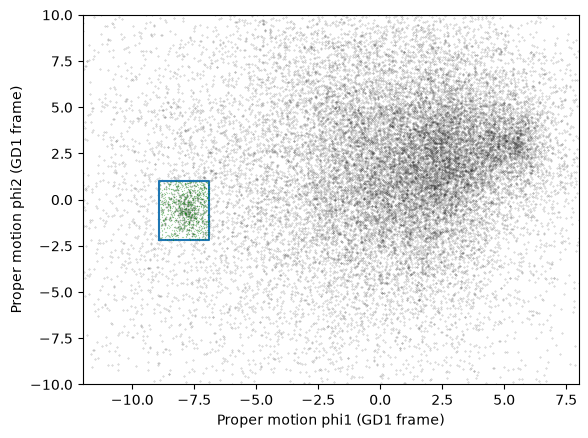
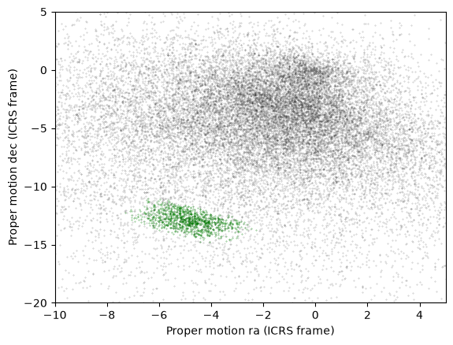
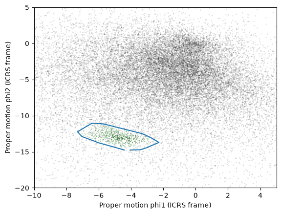
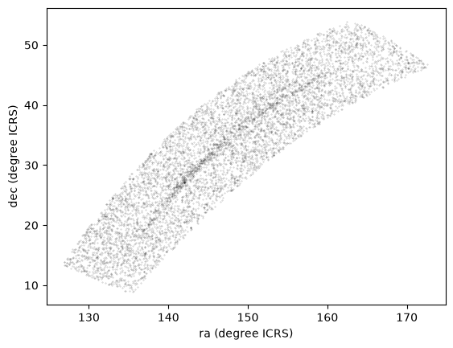
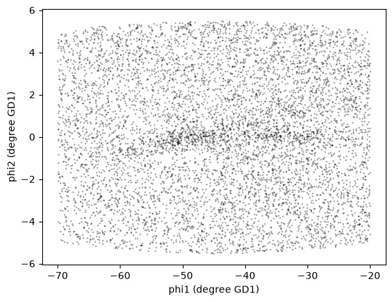

4. Transformation and Selection#
Click here to run this notebook on Colab. For the exercises, use the version with blanks.
In the previous lesson, we identified stars with the proper motion we expect for GD-1.
Now we’ll do the same selection in an ADQL query, which will make it possible to work with a larger region of the sky and still download less data.
Outline#
Here are the steps in this lesson:
Using data from the previous lesson, we’ll identify the values of proper motion for stars likely to be in GD-1.
Then we’ll compose an ADQL query that selects stars based on proper motion, so we can download only the data we need.
That will make it possible to search a bigger region of the sky in a single query. We’ll also see how to write the results to a CSV file.
After completing this lesson, you should be able to
Transform proper motions from one frame to another.
Compute the convex hull of a set of points.
Write an ADQL query that selects based on proper motion.
Save data in CSV format.
Reload the data#
You can download the data from the previous lesson or run the following cell, which downloads it if necessary.
from os.path import basename, exists
def download(url):
filename = basename(url)
if not exists(filename):
from urllib.request import urlretrieve
local, _ = urlretrieve(url, filename)
print('Downloaded ' + local)
download('https://github.com/AllenDowney/AstronomicalData/raw/main/' +
'data/gd1_data.hdf')
Now we can reload centerline_df and selected_df.
import pandas as pd
filename = 'gd1_data.hdf'
centerline_df = pd.read_hdf(filename, 'centerline_df')
selected_df = pd.read_hdf(filename, 'selected_df')
Selection by proper motion#
Let’s review how we got to this point.
We made an ADQL query to the Gaia server to get data for stars in the vicinity of GD-1.
We transformed the coordinates to the
GD1Koposov10frame so we could select stars along the centerline of GD-1.We plotted the proper motion of the centerline stars to identify the bounds of the overdense region.
We made a mask that selects stars whose proper motion is in the overdense region.
At this point we have downloaded data for a relatively large number of stars (more than 100,000) and selected a relatively small number (around 1000).
It would be more efficient to use ADQL to select only the stars we need. That would also make it possible to download data covering a larger region of the sky.
However, the selection we did was based on proper motion in the GD1Koposov10 frame. In order to do the same selection in ADQL, we have to work with proper motions in ICRS.
As a reminder, here’s the rectangle we selected based on proper motion in the GD1Koposov10 frame.
pm1_min = -8.9
pm1_max = -6.9
pm2_min = -2.2
pm2_max = 1.0
def make_rectangle(x1, x2, y1, y2):
"""Return the corners of a rectangle."""
xs = [x1, x1, x2, x2, x1]
ys = [y1, y2, y2, y1, y1]
return xs, ys
pm1_rect, pm2_rect = make_rectangle(
pm1_min, pm1_max, pm2_min, pm2_max)
Since we’ll need to plot proper motion several times, we’ll use the following function.
import matplotlib.pyplot as plt
def plot_proper_motion(df):
"""Plot proper motion.
df: DataFrame with `pm_phi1` and `pm_phi2`
"""
x = df['pm_phi1']
y = df['pm_phi2']
plt.plot(x, y, 'ko', markersize=0.3, alpha=0.3)
plt.xlabel('Proper motion phi1 (GD1 frame)')
plt.ylabel('Proper motion phi2 (GD1 frame)')
plt.xlim(-12, 8)
plt.ylim(-10, 10)
The following figure shows:
Proper motion for the stars we selected along the center line of GD-1,
The rectangle we selected, and
The stars inside the rectangle highlighted in green.
plot_proper_motion(centerline_df)
plt.plot(pm1_rect, pm2_rect)
x = selected_df['pm_phi1']
y = selected_df['pm_phi2']
plt.plot(x, y, 'gx', markersize=0.3, alpha=0.3);

Now we’ll make the same plot using proper motions in the ICRS frame, which are stored in columns pmra and pmdec.
x = centerline_df['pmra']
y = centerline_df['pmdec']
plt.plot(x, y, 'ko', markersize=0.3, alpha=0.3)
x = selected_df['pmra']
y = selected_df['pmdec']
plt.plot(x, y, 'gx', markersize=1, alpha=0.3)
plt.xlabel('Proper motion ra (ICRS frame)')
plt.ylabel('Proper motion dec (ICRS frame)')
plt.xlim([-10, 5])
plt.ylim([-20, 5]);

The proper motions of the selected stars are more spread out in this frame, which is why it was preferable to do the selection in the GD-1 frame.
But now we can define a polygon that encloses the proper motions of these stars in ICRS, and use that polygon as a selection criterion in an ADQL query.
Convex Hull#
SciPy provides a function that computes the convex hull of a set of points, which is the smallest convex polygon that contains all of the points.
To use it, we’ll select columns pmra and pmdec and convert them to a NumPy array.
import numpy as np
np.set_printoptions(legacy='1.25')
points = selected_df[['pmra','pmdec']].to_numpy()
points.shape
(1049, 2)
NOTE: If you are using an older version of Pandas, you might not have to_numpy(); you can use values instead, like this:
points = selected_df[['pmra','pmdec']].values
We’ll pass the points to ConvexHull, which returns an object that contains the results.
from scipy.spatial import ConvexHull
hull = ConvexHull(points)
hull
<scipy.spatial._qhull.ConvexHull at 0x7dc1fb9701a0>
hull.vertices contains the indices of the points that fall on the perimeter of the hull.
hull.vertices
array([ 692, 873, 141, 303, 42, 622, 45, 83, 127, 182, 1006,
971, 967, 1001, 969, 940], dtype=int32)
We can use them as an index into the original array to select the corresponding rows.
pm_vertices = points[hull.vertices]
pm_vertices
array([[ -4.05037121, -14.75623261],
[ -3.41981085, -14.72365546],
[ -3.03521988, -14.44357135],
[ -2.26847919, -13.7140236 ],
[ -2.61172203, -13.24797471],
[ -2.73471401, -13.09054471],
[ -3.19923146, -12.5942653 ],
[ -3.34082546, -12.47611926],
[ -5.67489413, -11.16083338],
[ -5.95159272, -11.10547884],
[ -6.42394023, -11.05981295],
[ -7.09631023, -11.95187806],
[ -7.30641519, -12.24559977],
[ -7.04016696, -12.88580702],
[ -6.00347705, -13.75912098],
[ -4.42442296, -14.74641176]])
To plot the resulting polygon, we have to pull out the x and y coordinates.
pmra_poly, pmdec_poly = np.transpose(pm_vertices)
This use of transpose is a useful NumPy idiom. Because pm_vertices has two columns, its matrix transpose has two rows, which are assigned to the two variables pmra_poly and pmdec_poly.
The following figure shows proper motion in ICRS again, along with the convex hull we just computed.
x = centerline_df['pmra']
y = centerline_df['pmdec']
plt.plot(x, y, 'ko', markersize=0.3, alpha=0.3)
x = selected_df['pmra']
y = selected_df['pmdec']
plt.plot(x, y, 'gx', markersize=0.3, alpha=0.3)
plt.plot(pmra_poly, pmdec_poly)
plt.xlabel('Proper motion phi1 (ICRS frame)')
plt.ylabel('Proper motion phi2 (ICRS frame)')
plt.xlim([-10, 5])
plt.ylim([-20, 5]);

So pm_vertices represents the polygon we want to select.
The next step is to use it as part of an ADQL query.
Assembling the query#
In Lesson 2 we used the following query to select stars in a polygonal region.
query5_base = """SELECT
{columns}
FROM gaiadr2.gaia_source
WHERE parallax < 1
AND bp_rp BETWEEN -0.75 AND 2
AND 1 = CONTAINS(POINT(ra, dec),
POLYGON({point_list}))
"""
In this lesson we’ll make two changes:
We’ll select stars with coordinates in a larger region.
We’ll add another clause to select stars whose proper motion is in the polygon we just computed,
pm_vertices.
Here are the coordinates of the larger rectangle in the GD-1 frame.
import astropy.units as u
phi1_min = -70 * u.degree
phi1_max = -20 * u.degree
phi2_min = -5 * u.degree
phi2_max = 5 * u.degree
We selected these bounds by trial and error, defining the largest region we can process in a single query.
phi1_rect, phi2_rect = make_rectangle(
phi1_min, phi1_max, phi2_min, phi2_max)
Here’s how we transform it to ICRS, as we saw in Lesson 2.
from gala.coordinates import GD1Koposov10
from astropy.coordinates import SkyCoord
gd1_frame = GD1Koposov10()
corners = SkyCoord(phi1=phi1_rect,
phi2=phi2_rect,
frame=gd1_frame)
corners_icrs = corners.transform_to('icrs')
To use corners_icrs as part of an ADQL query, we have to convert it to a string.
Here’s the function from Lesson 2 we used to do that.
def skycoord_to_string(skycoord):
"""Convert SkyCoord to string."""
t = skycoord.to_string()
s = ' '.join(t)
return s.replace(' ', ', ')
point_list = skycoord_to_string(corners_icrs)
point_list
'135.306, 8.39862, 126.51, 13.4449, 163.017, 54.2424, 172.933, 46.4726, 135.306, 8.39862'
Here are the columns we want to select.
columns = 'source_id, ra, dec, pmra, pmdec'
Now we have everything we need to assemble the query.
query5 = query5_base.format(columns=columns,
point_list=point_list)
print(query5)
SELECT
source_id, ra, dec, pmra, pmdec
FROM gaiadr2.gaia_source
WHERE parallax < 1
AND bp_rp BETWEEN -0.75 AND 2
AND 1 = CONTAINS(POINT(ra, dec),
POLYGON(135.306, 8.39862, 126.51, 13.4449, 163.017, 54.2424, 172.933, 46.4726, 135.306, 8.39862))
But don’t try to run that query. Because it selects a larger region, there are too many stars to handle in a single query. Until we select by proper motion, that is.
Selecting proper motion#
Now we’re ready to add a WHERE clause to select stars whose proper motion falls in the polygon defined by pm_vertices.
We used POLYGON to select stars by position, but it only works with coordinates on the sky: the Gaia archive rejects a polygon with a negative right ascension, and the proper motions we want are negative. So we’ll do the selection in two steps:
In the query, we’ll use
BETWEENto select stars whose proper motion falls in the rectangle that bounds the polygon.After we download the results, we’ll select the stars inside the polygon.
The bounds of the rectangle are the minimum and maximum of the vertices in each column.
pmra_min, pmdec_min = pm_vertices.min(axis=0)
pmra_max, pmdec_max = pm_vertices.max(axis=0)
pmra_min, pmra_max, pmdec_min, pmdec_max
(-7.306415190921692,
-2.268479190206636,
-14.75623260987968,
-11.05981294804957)
Exercise#
Define query6_base, starting with query5_base and adding two clauses that use BETWEEN to select stars whose proper motion, pmra and pmdec, falls within these bounds. Use format specifiers named pmra_min, pmra_max, pmdec_min, and pmdec_max.
Exercise#
Use format to format query6_base and define query6, filling in the values of columns, point_list, and the bounds of the rectangle.
Now we can run the query like this:
from astroquery.gaia import Gaia
job = Gaia.launch_job_async(query6)
print(job)
INFO: Query finished. [astroquery.utils.tap.core]
<Table length=13052>
name dtype unit description
--------- ------- -------- ------------------------------------------------------------------
source_id int64 Unique source identifier (unique within a particular Data Release)
ra float64 deg Right ascension
dec float64 deg Declination
pmra float64 mas / yr Proper motion in right ascension direction
pmdec float64 mas / yr Proper motion in declination direction
<Table length=13052>
name dtype unit description
--------- ------- -------- ------------------------------------------------------------------
source_id int64 Unique source identifier (unique within a particular Data Release)
ra float64 deg Right ascension
dec float64 deg Declination
pmra float64 mas / yr Proper motion in right ascension direction
pmdec float64 mas / yr Proper motion in declination direction
Jobid: 6614acb6-cd85-11f1-9d98-bc97e148b76b-O
Phase: COMPLETED
Owner: None
Output file: async_20261021192705.vot
Results: None
And get the results.
candidate_table = job.get_results()
len(candidate_table)
13052
These are the stars whose proper motion falls in the rectangle. To select the ones inside the polygon, we’ll use a Matplotlib Polygon, which provides contains_points. It takes an array of points and returns a Boolean array that indicates which points are inside the polygon.
from matplotlib.patches import Polygon
pm_polygon = Polygon(pm_vertices)
candidate_points = np.transpose([candidate_table['pmra'],
candidate_table['pmdec']])
inside = pm_polygon.contains_points(candidate_points)
inside.sum()
7350
We can use inside to select the rows of the table.
candidate_table = candidate_table[inside]
len(candidate_table)
7350
We call the results candidate_table because it contains stars that are good candidates for GD-1.
For the next lesson, we’ll need point_list and pm_vertices again, so we should save them in a file.
There are several ways we could do that, but since we are already storing data in an HDF file, let’s do the same with these variables.
We’ve seen how to save a DataFrame in an HDF file.
We can do the same thing with a Pandas Series.
To make one, we’ll start with a dictionary:
d = dict(point_list=point_list)
d
{'point_list': '135.306, 8.39862, 126.51, 13.4449, 163.017, 54.2424, 172.933, 46.4726, 135.306, 8.39862'}
And use it to initialize a Series.
point_series = pd.Series(d)
point_series
point_list 135.306, 8.39862, 126.51, 13.4449, 163.017, 54...
dtype: str
Now we can save it in the usual way.
filename = 'gd1_data.hdf'
point_series.to_hdf(filename, key='point_series')
And we can put pm_vertices in a DataFrame and save it the same way.
pm_df = pd.DataFrame(pm_vertices, columns=['pmra', 'pmdec'])
pm_df.to_hdf(filename, key='pm_df')
Plotting one more time#
Let’s see what the results look like.
x = candidate_table['ra']
y = candidate_table['dec']
plt.plot(x, y, 'ko', markersize=0.3, alpha=0.3)
plt.xlabel('ra (degree ICRS)')
plt.ylabel('dec (degree ICRS)');

Here we can see why it was useful to transform these coordinates. In ICRS, it is more difficult to identify the stars near the centerline of GD-1.
So let’s transform the results back to the GD-1 frame.
Here’s the code we used to transform the coordinates and make a Pandas DataFrame, wrapped in a function.
from gala.coordinates import reflex_correct
def make_dataframe(table):
"""Transform coordinates from ICRS to GD-1 frame.
table: Astropy Table
returns: Pandas DataFrame
"""
skycoord = SkyCoord(
ra=table['ra'],
dec=table['dec'],
pm_ra_cosdec=table['pmra'],
pm_dec=table['pmdec'],
distance=8*u.kpc,
radial_velocity=0*u.km/u.s)
gd1_frame = GD1Koposov10()
transformed = skycoord.transform_to(gd1_frame)
skycoord_gd1 = reflex_correct(transformed)
df = table.to_pandas()
df['phi1'] = skycoord_gd1.phi1.value
df['phi2'] = skycoord_gd1.phi2.value
df['pm_phi1'] = skycoord_gd1.pm_phi1_cosphi2.value
df['pm_phi2'] = skycoord_gd1.pm_phi2.value
return df
Here’s how we use it:
candidate_df = make_dataframe(candidate_table)
And let’s see the results.
x = candidate_df['phi1']
y = candidate_df['phi2']
plt.plot(x, y, 'ko', markersize=0.5, alpha=0.5)
plt.xlabel('phi1 (degree GD1)')
plt.ylabel('phi2 (degree GD1)');

We’re starting to see GD-1 more clearly. We can compare this figure with this panel from Figure 1 from the original paper:

This panel shows stars selected based on proper motion only, so it is comparable to our figure (although notice that it covers a wider region).
In the next lesson, we will use photometry data from Pan-STARRS to do a second round of filtering, and see if we can replicate this panel.

Later we’ll see how to add annotations like the ones in the figure and customize the style of the figure to present the results clearly and compellingly.
Summary#
In the previous lesson we downloaded data for a large number of stars and then selected a small fraction of them based on proper motion.
In this lesson, we improved this process by writing a more complex query that uses the database to select stars based on proper motion. This process requires more computation on the Gaia server, but then we’re able to either:
Search the same region and download less data, or
Search a larger region while still downloading a manageable amount of data.
In the next lesson, we’ll learn about the database JOIN operation and use it to download photometry data from Pan-STARRS.
Best practices#
When possible, “move the computation to the data”; that is, do as much of the work as possible on the database server before downloading the data.
Copyright 2020–2026 Allen Downey
Code license: MIT License
Text license: Creative Commons Attribution 4.0 International